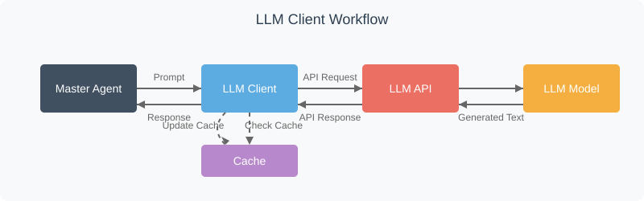

Chapter 3: LLM Client
Welcome back to the EggHatch AI tutorial! In the last chapter, Master Agent (Orchestrator), we learned that the Master Agent is the "brain" or "project manager" that takes your question and figures out the steps needed to answer it. It decides what needs to be done.
But how does the Master Agent actually talk to the AI itself? How does it send those instructions or prompts and get text back? That's where the LLM Client comes in.
What is the LLM Client?
Think of the LLM Client as the dedicated messenger service for the EggHatch AI system. Its only job is to handle talking to the Large Language Model (LLM).
The LLM is the actual AI model (in our case, Gemma running through Ollama) that can understand language, generate text, and perform complex reasoning tasks. It's the expert that provides the raw intelligence.
The LLM Client is the specialized tool that allows other parts of our system, like the Master Agent, to send messages (prompts) to the LLM and receive the AI's generated text replies.
Why Do We Need an LLM Client?
We need the LLM Client because talking to an AI model isn't always as simple as sending a text message. AI models often run as separate services (like Ollama), and interacting with them requires specific technical steps:
API Communication
Handles the HTTP requests and responses to the LLM service
Format Conversion
Transforms data between our system's format and the LLM's required format
Error Handling
Manages connection issues, timeouts, and other potential problems
Performance Optimization
Implements caching, retries, and other efficiency improvements
By having a dedicated LLM Client, we make it much easier for the rest of our system to use the AI model without worrying about these technical details.
How the LLM Client Works
The LLM Client in EggHatch AI is designed to be simple but effective. Here's a visual representation of how it works:

The LLM Client Implementation
Let's look at a simplified version of the LLM Client code:
import requests
import json
import os
import logging
from datetime import datetime
class LLMClient:
def __init__(self):
# Configure the LLM endpoint
self.base_url = os.getenv("LLM_API_URL", "http://localhost:11434/api")
self.model = os.getenv("LLM_MODEL", "gemma")
# Set up caching
self.cache = {}
self.cache_file = "llm_cache.json"
self._load_cache()
# Configure logging
self._setup_logging()
def analyze_query(self, prompt_template, user_query):
"""
Send a query to the LLM for analysis
"""
# Format the prompt with the user query
prompt = prompt_template.format(user_query=user_query)
# Get response from LLM (with caching)
return self.generate_text(prompt)
def generate_text(self, prompt, use_cache=True):
"""
Generate text from the LLM based on a prompt
"""
# Check cache if enabled
if use_cache and prompt in self.cache:
self.logger.info(f"Cache hit for prompt: {prompt[:50]}...")
return self.cache[prompt]
# Prepare the request to the LLM API
payload = {
"model": self.model,
"prompt": prompt,
"stream": False
}
try:
# Send request to the LLM API
response = requests.post(
f"{self.base_url}/generate",
headers={"Content-Type": "application/json"},
data=json.dumps(payload)
)
# Check for successful response
if response.status_code == 200:
result = response.json()
generated_text = result.get("response", "")
# Update cache
if use_cache:
self.cache[prompt] = generated_text
self._save_cache()
return generated_text
else:
self.logger.error(f"LLM API error: {response.status_code} - {response.text}")
return "I encountered an error processing your request."
except Exception as e:
self.logger.error(f"Exception when calling LLM API: {str(e)}")
return "I encountered an error processing your request."
Key Features of the LLM Client
Caching
Stores previous responses to avoid unnecessary API calls
Logging
Records all interactions for debugging and improvement
Configuration
Uses environment variables for flexible deployment
Error Handling
Gracefully manages API failures and exceptions
Benefits of the LLM Client Design
- Abstraction: Other components don't need to know the details of how to talk to the LLM
- Consistency: All LLM interactions follow the same pattern
- Maintainability: Changes to the LLM API only require updates in one place
- Performance: Caching and other optimizations improve response time
- Monitoring: Centralized logging makes it easier to track LLM usage
Next Steps
Now that you understand how the LLM Client enables communication with the AI model, let's move on to Chapter 4: Data Pipeline, where we'll explore how EggHatch AI manages the flow of data between different components.